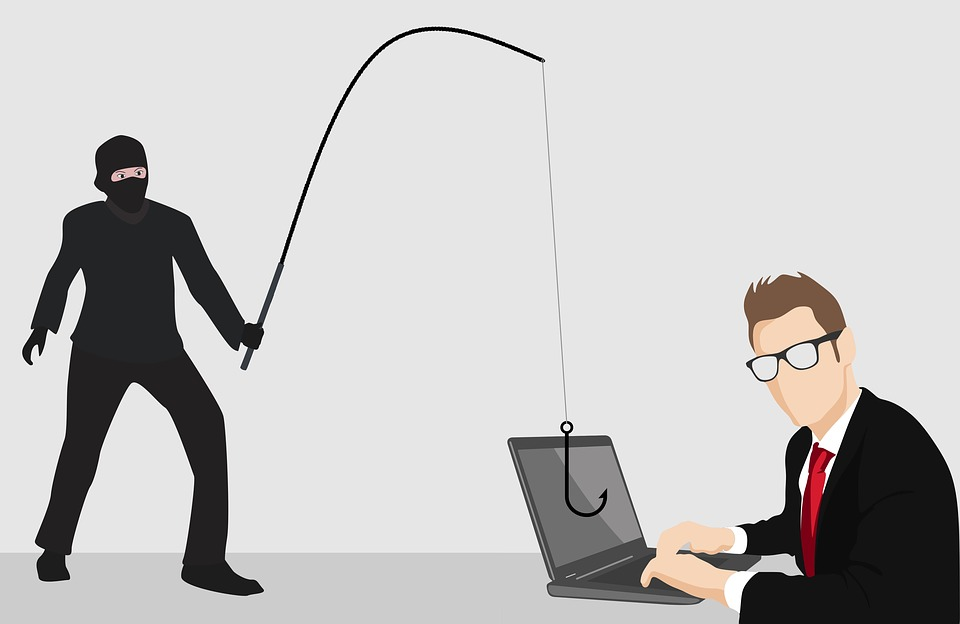
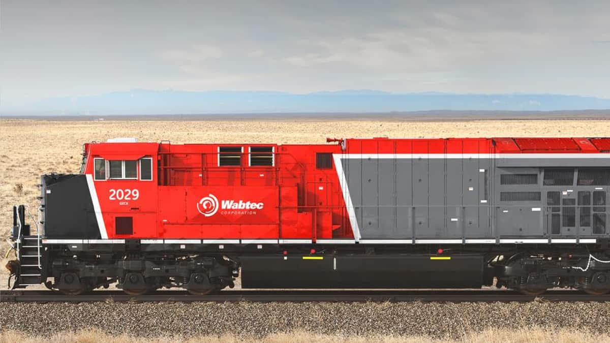
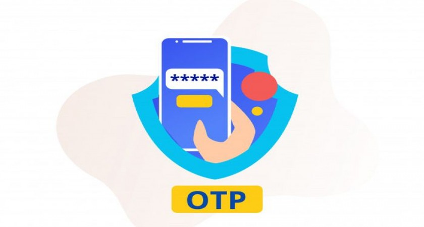
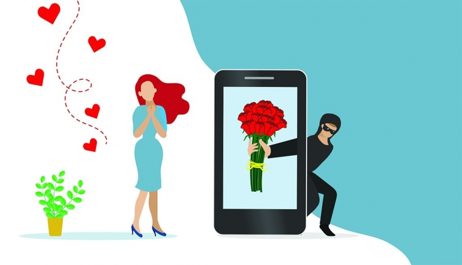

Kasus-Kasus Cybercrime Dari Dalam dan Luar Negeri

Cybercrime semakin hari semakin menjadi saja, memang dengan banyaknya orang berinternet besar peluang kita menjadi korban dari Cybercrime. Hal seperti ini tidak terjadi kemarin sore akan tetapi cyber crime terjadi semenjak internet itu ada dan dipergunakan umum, kasus Cybercrime terjadi di seluruh dunia, Indonesia pun tidak luput dari ancaman Cybercrime. Faktanya menurut persuhaan cyber security Surfshark, terdapat 1,04 juta akun yang membocorjan data di tanah air pada kuartal kedua 2022. Hal ini bahkan melonjak 143% dari kuartal pertama 2022.
Dari organisasi pemerintah hingga perusahaan swasta menjadi target cybercrime. kerugiannya bervariasi ada yang hanya mengubah tampilan halaman depan web hingga bocornya data karyawan, konsumen, ataupun warga negara Indonesia.
Berikut saya merangkum kasus kasus cybercrime yang terjadi baik internasional dan nasional, yaitu:
1. Hacker Korea Utara Bobol Ratusan Website Korea Selatan & Curi Data Pribadi
Pemerintah Korea Selatan kewalahan setelah seorang hacker yang diduga berasal dari Korea Utara meretas ribuan website negara tersebut dan menvuri data pribadi hingga crypto. Tragedi ini mirip yang beberapa bulan lalu dialami oleh rakyat Indonesia, yaitu Bjorka yang mencuri data-data pribadi dari pemerintah Indonesia.
Hacker ini berfokus pada data akademisi yang diambil semenjak April 2022 dan melakukan email phising. Serangan ini diduga menargetkan orang orang yang berada di pemerintahan maupun politik Korea Selatan. Email itu menyertakan tautan ke situs lain yang sebenarnya palsu atau bisa berbentuk virus dalam bentuk lampiran. Walaupun menggunakan metode lama namun, mereka berhasil mengelabui korban.
Tercatat 13 perusahaan menjadi korban dari kejadian ini. Bahkan dua perusahaan di antaranya rela membayar 2,5 juta won atau setara 24 juta untuk membayar tebusan yang diminta oleh sang hacker. Saat ini pemerintah Korea Selatan mendesak kepada orang-orang yang berkerja di area vital pemerintahan agar selalu waspada terhadap serangan phising dan memperkuat keamaan siber mereka.
2.Mantan CEO FTX Sam Bankman Fried Terduga Yang Memindahkan Kripto 10,6 Miliar
Sam Bankman Fried merupakan tokoh yang cukup terkenal di dunia Kripto, pada 2019, ketika berumur 27 tahun, dia mendirikan FTX, bursa derivatif aset kripto.
Setelah 4 tahun berdiri kini FTX diambang kebangrutan karena kondisi bear market dan kenaikan suku bunga. Kesepakatan yang melibatkan perdangan Bankman-fried, Alameda Research, menimbulkan serangkaian kerugian pada mei dan juni yang akhirnya menjadi boomerang keduanya.
Saat ini Bankman telah ditangkap atas tuduhan penipuan dan menjadi tahanan rumah. Menurut analis bernama Bowtiediguana, Bankman mungkin telah menguangkan USD 684.000 (Rp 10,6 Miliar) aset Kripto saat menjadi tahanan rumah.
Ini dilakukan dengan cara pertukaran desentralisasi Sushiswap, setelah pendiri anonim Chef Nomi memutuskan untuk pergi. Saat kesepakatan dibuat, SBF membagikan alamat Ethereum publik dan Chef Nomi mentransfer kepemilikan Sushiswap ke alamat SBF.
Dalam waktu kurang dari empat jam, 570 Ethereum telah disetorkan dari dompet ini, ke berbagai tujuan Dana dikirim ke pertukaran tanpa proses KYC yang berbasis di Seychelles dan ke jaringan Bitcoin melalui Protokol Ren, jembatan blockchain yang didanai oleh Alameda. Semenjak Bankman ditangkap dan pembebasannya, dana yang terkait FTX dan Alameda telah bergerak.
3.Warga Malaysia Menjadi Korban Pencurian Data
Lebih Dari 800.000 data pribadi dan foto individu diduga dicuri dari situs MySPR, dan dijual sekitar RM9.000 atau setara Rp 29.000.000,-. Data-data ini dijual di forum online dan menyediakan pembayaran lewat bitcoin atau mata uang kripto monero.
Penjual data mencalidasi bahwa database yang dijualnya berisi info 802.259 pengguna, termasuk foto, nama lengkap, nomor MyKad, alamat email, kata sandi, nomor telepon, tanggal lahir, dan alamat pengguna.
Tak hanya itu, di postingan lain pengunggah menjual data pribadi dari 22,5 juta rakyat Malaysia yang tanggal lahirnya berkisar antara 1940 hingga 2004, yang diperoleh dari My Identity API. Situs daftar MySPR, diluncurkan kembali pada 2019 yang memungkinkan rakyat Malaysia untuk mendaftar sebagai pemilih secara online.
4.‘Scammer Payback’ Menargetkan Penipu Yang Meresahkan Di Amerika
Seorang perkerja keamanan siber profesional yang bernama ‘Pierogi’, berhasil meneror para penipu yang sering menipu lewat telepon yang mengatasnamakan microsoft. Dia terinspirasi setelah menonton banyak video youtube tentang penipuan.
Menurut FBI, mereka menerima banyak keluhan tentang kriminal yang beraksi di internet dan Amerika kehilangan USD 4.5 Miliar akibat kejahatan siber. Melalui channerl Scammer Payback pierogi berhasil mengembalikan uang dari para korban.
Saat ini dia berkerja sama dengan para ‘menipu sang penipu’ dari seluruh dunia, yang cara kerjanya dengan seorang menelepon penipu dan membohongi penipu dengan berpura-pura menjadi korban hanya untuk menghabiskan waktu mereka.
5.Perusahaan Lokomotif Amerika Webtech Mengumumkan Serangan Lockbit Ransomware

Perusahaan Webtech Corporation mengumumkan peretasan data yang mengambil data personal dan sensitif. Karyawan di perusahaan ini berkisar 25.000 orang dan hadir di 50 negara, menjadi pemimpin pasar di bidang lokomotif.
Dalam pengumuman yang diterbitkan pada akhir tahun, Wabtech berkata si peretas masuk kedalam sistem dan menginstall virus ransomware pada 15 maret 2022. Pada bulan juni ditemukan aktivitas yang tidak biasa dalam sistem network mereka dan memulai investigasi dari peretasan ini. Beberapa minggu kemudian, Lockbit merilis sample data yang dicuri dari Wabtech dan berencana merilis semuanya karena perusahaan tidak menebus data tersebut.
Mereka menyebutkan bahwa data yang dibocorkan merupakan data sensitif yang, diantaranya:
- Nama lengkap
- Tanggal lahir
- Alamat ip
- DLL
Perusahaan mulai mengirim pemberitahuan pada para karyawan yang terkena dampak kebocoran data ini di 30 desember 2022, namun tidak diberitahukan berapa orang yang terkena dampak insiden ini,
6.Modus Baru Bobol Rekening, ‘Kurir’ Kirim Foto Untuk Curi OTP

Akhir-akhir ini netizen Indonesia dihebohkan dengan tangkapan layar soal modus penipuan dengan mengakui sebagai paket. Dalam tangkapan layar terlihat sikorban diminta oleh penipu untuk meng-klik “lihat foto paket” yang dikirim penipu.
Tanpa sadar aplikasi akan meminta akses pada SMS dan pesan OTP yang dikirim akan diteruskan pada telegram penipu. Dari kejadian itulah korban akan mengetahui mobile banking nyaterkuras oleh pelaku.
7.Channel Youtuber Terkena Hack
Setidaknya dalam dua tahun terakhir banyak youtuber yang mengeluhkan bahwa channelnya terhack dan dari yang saya analisis semuanya menjajahkan crypto Currency baik Elon Musk yang dimana dia sangat mudah untuk mengatur pasar crypto, maupun crypto Currency yang lain.
Yang terbaru ada Raditya Dika yang channel youtubenya yang terkena hack dan menampilkan satu video livestreaming tentang crypto currency. Selain Radit, youtuber lain seperti Windah Basudara, Arief Muhammad, dan Tara Arts pernah menjadi korban hack dari oknum tidak bertanggung jawab. Dengan modus operandi yang berbeda-beda para hacker berhasil mengambil alih akun berserta channel youtube para influencer ini.
8.Pesan Berantai ‘Horor’
Pada tahun-tahun ketika BBM masih sering digunakan sempat beredar pesan berantai yang sifatnya membuat tidak tenang, yaitu pesan dimana kita harus menyebar pesan itu agar tidak dihantui. Anehnya, masih banyak orang yang percaya hal seperti itu dan membuat geger. Pesan tersebut berisikan tentang bocah yang mencari orang yang membunuhnya. Ia pun meminta orang yang menerima pesan ini untuk menyebarkan kepada semua kontak dengan sebuah ancaman.
Dengan permohonannya tersebut dia berjanji jika tidak tersebar ke seluruh kontak, ia akan mendatangi sang penerima pesan dengan niatan meneror. Pada nyatanya seluruh pesan ini merupakan hoaks dan hal yang mustahil dan tidak jelas.
9.Love Scam Yang Mengintai DI Aplikasi Kencan

Pada love scamming korban akan diperas dengan iming iming untuk mengunjungi korban ke negara atau daerahnya untuk bertemu. Korban dan pelaku biasanya berkenalan dalam situs kencan atau dating app.
Polda metro jaya pernah menangkap dua orang pelaku dengan modus “love scamming” yang merugikan korban hingga Rp. 2,4 miliar. Pelaku penipuan tersebut ialah perempuan berinisial CS dan laki-laki berkewarganegaraan asing berinisial UT.
Saat itu pelaku mengaku sebagai tentara perempuan Amerika Serikat yang hendak mengundurkan diri karena tidak ingin ditugaskan di Suriah. Setelah berhubungan cukup intensif korban dan meminta sejumlah uang dengan dalih untuk pelaku bisa dikirimkan dari Suriah ke Indonesia. Terdapat pelaku utama yang masih buron yang berperan sebagai penampung dana yang telah diserahkan korban.
10.Kasus peretasan di Indonesia
Banyak kasus peretasan yang terjadi di Indonesia terlebih para peretas ini menargetkan instansi negara, bank, bahkan e-commerce. Seperti contoh, situs tokopedia pernah teretas dan peretasnya menjual datanya ke Dark Web ini si peretas berhasil mengumpulkan 91 juta data pengguna dan pedagang. Hasil data nya bahkan dijual dengan harga 70 juta.
Adapun peretasan instansi pemerintah, peretas yang dikenal bjorka mengklaim memiliki data pelanggan My Pertamina yang berisi atas nama, NPWP, NIK, nomor telepo, dan pengeluaran pengguna. Bjorka menuliskan bahwa data yang ia miliki bernilai USD 25 ribu atau Rp 392 juta.
Kesimpulan
Selama kita di internet kita harus selalu waspada akan bahaya yang mengintai kita. Dan sadari bahaya itu bisa datang dari mana saja. Tindakan preventif sangat penting untuk menangkal kejahatan siber, seperti mengganti password secara rutin, memeriksa aktivitas akun secara teratur, menggunakan T2A atau two Authenticator, dan hindari situs-situs yang sekirannya mencurigakan.